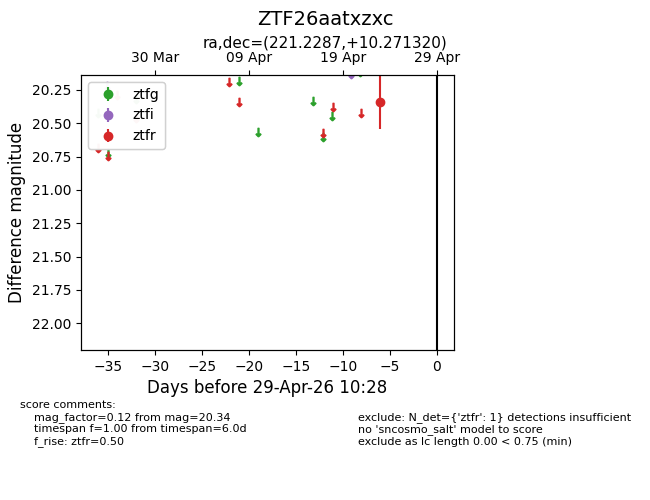
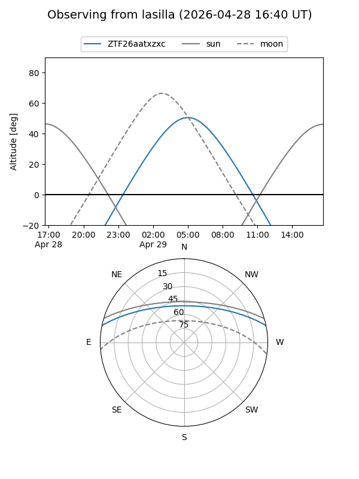
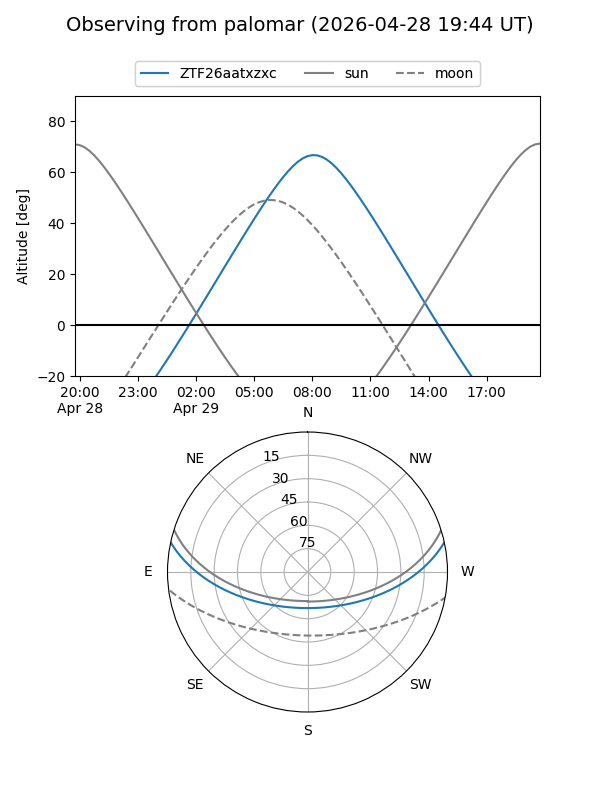
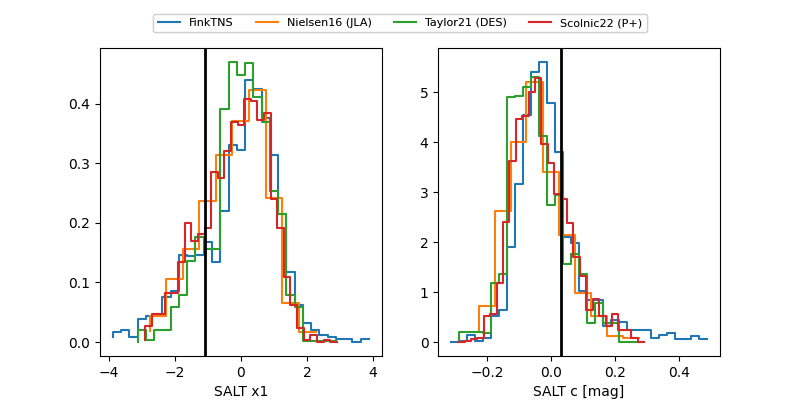

ZTF26aatxzxc
Target ZTF26aatxzxc at 2026-04-29 10:31
Aliases and brokers:
FINK: link
Lasair: link
ALeRCE: link
alt names
ZTF26aatxzxc (ztf,fink_ztf)
Coordinates:
equatorial (ra, dec) = 221.2287,+10.27132
equatorial (HMS+DMS) = 14:44:54.89,+10:16:16.75
galactic (l, b) = (6.1389,+58.41461)
Flags:
Photometry:
last ztfr=20.34
1 ztfr detections
Lightcurve

Visibility


Additional plots
